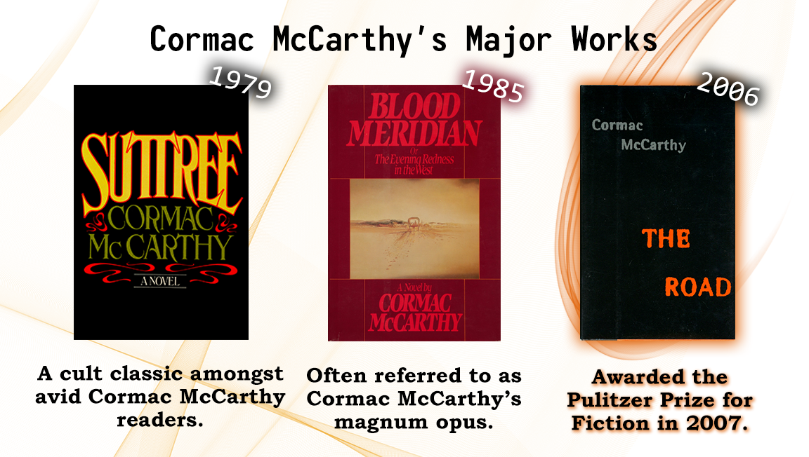
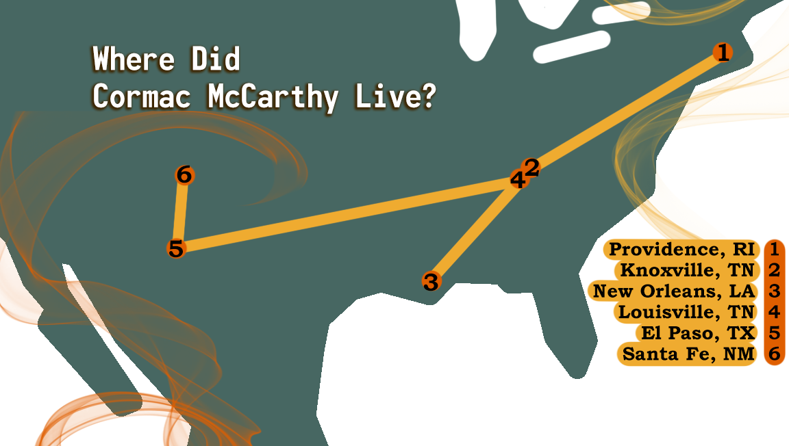
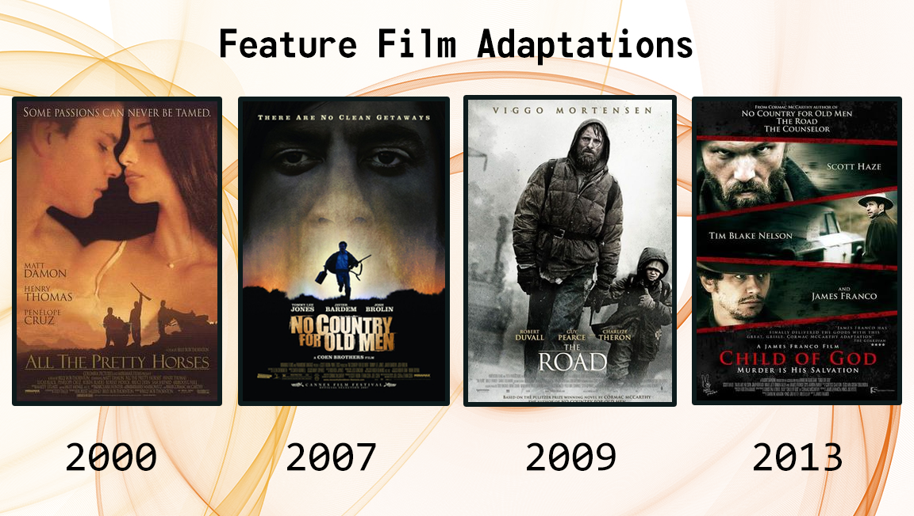
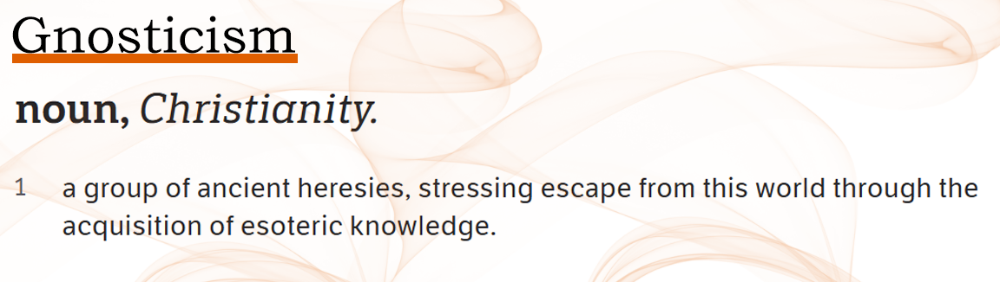
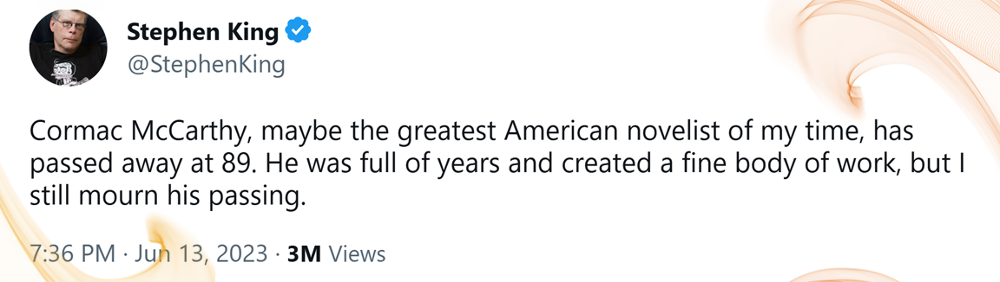

Inspiration (Author Biography)

Cormac McCarthy was an American author born on July 20th of 1933. His novels explore the worst of humanity through
complex characters that exhibit taboo, morally questionable, and utterly despicable behaviors. McCarthy’s stories fall
under the post-apocalyptic, gothic, and Western genres.

McCarthy was born in Providence, Rhode Island and spent most of his life in Tennessee, Texas, and New Mexico. As such,
he incorporates regions of the American south and southwest into his works. McCarthy studied liberal arts at the
University of Tennessee, but never graduated. Instead, he quit school and served in The United States Air Force from
1953 to 1957.

Cormac McCarthy maintained a reclusive public presence. McCarthy married, and divorced, three times in his life. He had
two children, about whom little is known. He famously denied public speaking opportunities with the rationale that
everything he had to say could be found within his books. He avoided TV appearances, though he did codirect multiple TV
and feature film adaptations of his work.

His religious views were unclear but continue to be speculated upon due to the philosophical concepts found in his
works. McCarthy grew up in a Catholic family and has made reference to Christian imagery, though many believe his ideas
do not align with the religion. His focus on discussing abstract concepts of good and evil has led some fans to label
him as Gnostic.
It is said that throughout his career, he typed 5 million words on a Olivetti Lettera 32 typewriter that he had
purchased for $50 ($497.47 as adjusted to 2023 inflation). In 2009, McCarthy put his well-used typewriter up for
auction. It sold for a whopping $254,500 ($361,460.54 as adjusted to 2023 inflation).

Towards the end of his life, Cormac McCarthy became a dedicated member of a theoretical research think tank known as the
Sante Fe Institute. There, he published an essay titled The Kekulé Problem that examined how language originated. His
last published work was The Western Family Duology, a pair of novels titled The Passenger and Stella Maris. McCarthy
passed away on June 13, 2023 at the age of 89.